DSAN 6600: Diffusion Models and GANs
2026-11-12
Today
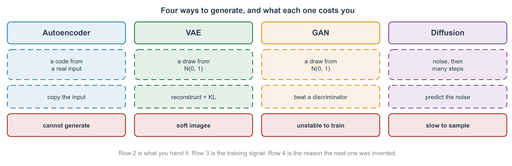
Last week ended on the catch in column two: a VAE can be sampled, and what comes out is soft. Today is the two answers to that. A GAN changes the loss. Diffusion changes the target. Only one of them is still in wide use, but the other is where the idea of a learned loss comes from.
The landscape
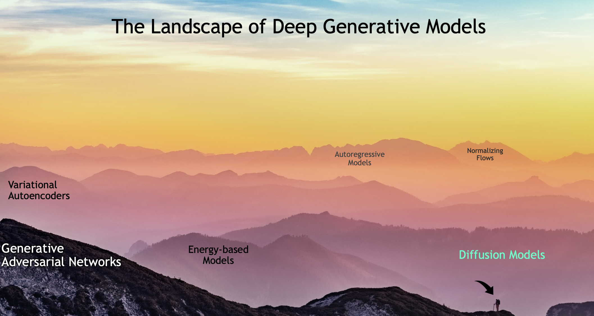
Four families, and the two in the foreground are the ones you have met. Normalizing flows and autoregressive models are real and are used, mostly for audio and for density estimation where you need an exact likelihood. For images in 2026 the peak on the right is where everything is.
The counterfeiter and the cop
A GAN trains two networks against each other: a generator that makes fakes, and a discriminator that tries to catch them.
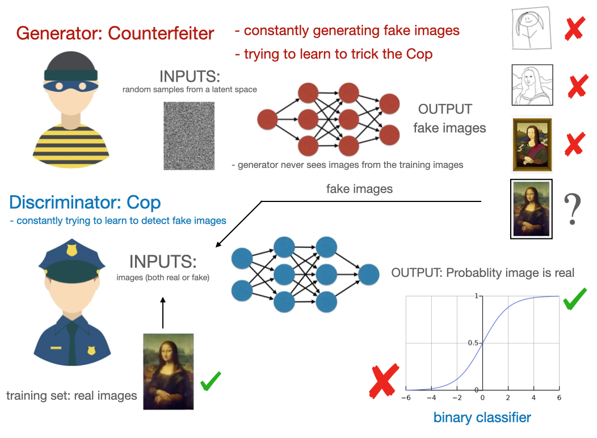
Neither network is told what a good image looks like. The generator never sees a real image at all. All it ever gets is the discriminator’s verdict, and the discriminator is itself improving. The pencil sketches on the right are the generator getting better: rejected, rejected, rejected, then good enough to be worth a question mark.
The two networks
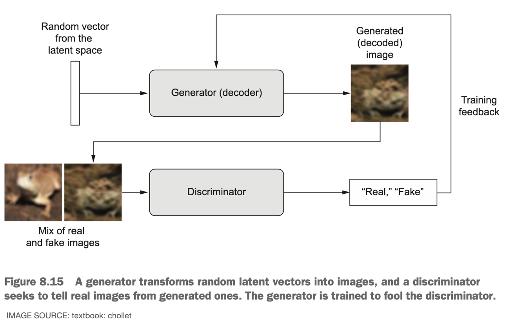
A random vector goes into the generator and an image comes out. That image is mixed in with real ones and the discriminator labels each as real or fake. The feedback arrow is the whole trick: the generator’s gradient comes through the discriminator, so it improves by learning what the discriminator currently looks for.
Training alternates
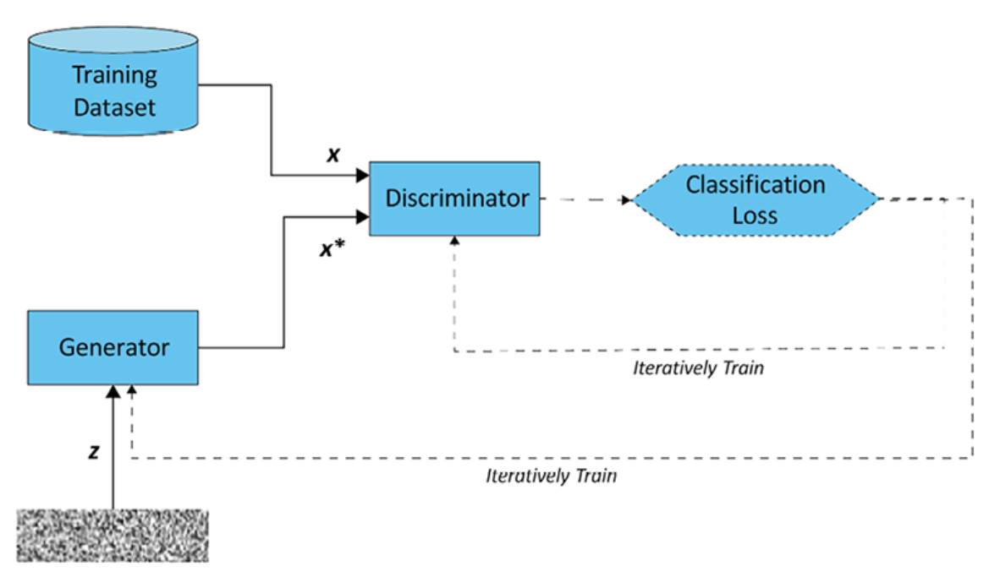
Freeze the generator, train the discriminator on real and fake
Freeze the discriminator, train the generator to fool it
You never train both at once. Each one is held still while the other improves, which is why this is called a two-player game rather than an optimization. There is no single loss going down; there are two, and they are pulling against each other.
The objective
The discriminator is an ordinary binary classifier, so start from binary cross entropy, with \(D(x)\) its estimate that \(x\) is real.
\[\mathcal{L} = -\Big[\, y \log D(x) \;+\; (1-y)\,\log\big(1 - D(x)\big) \Big]\]
Real data is \(y=1\) and generated data is \(y=0\) , so both halves collapse into one expression:
\[\min_G \; \max_D \;\; \mathbb{E}_{x}\big[\log D(x)\big]
\;+\; \mathbb{E}_{z}\big[\log\big(1 - D(G(z))\big)\big]\]
\(D\) pushes it up. \(G\) pushes the same expression down.
One expression, two optimizers pointed in opposite directions. In practice the generator term is swapped for a non-saturating version, because early on the discriminator wins easily and the original gradient is almost zero exactly when the generator most needs a signal. You will not derive this again; the point is that there is one objective and the two players read it with opposite signs.
DCGAN
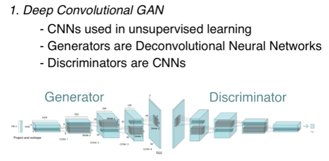
Generator is transposed convolutions going up. Discriminator is a CNN going down.
The first version that trained reliably on images, and still the template. The recipe that came with it is mostly about stability: strided convolutions instead of pooling, batch normalization, LeakyReLU in the discriminator, and tanh on the output.
Conditional GAN
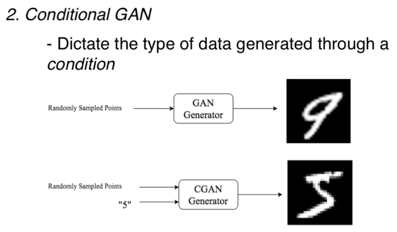
Feed the label in alongside the noise, and you choose what comes out.
Without conditioning you get a digit, but not a digit you asked for. Pass the class to both the generator and the discriminator and you can request a five. Hold on to this idea. Everything interesting about diffusion is conditioning, and the question is always the same one: how do you get the request into the network.
What comes out
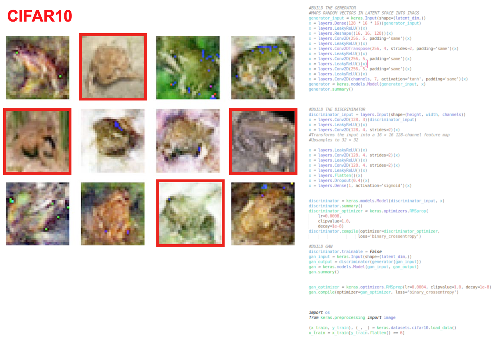
CIFAR-10 frogs. The circled four would pass; the rest would not.
This is the honest picture of a small GAN trained for a reasonable time. A handful are convincing and most are not, and the ones that fail do so in a way that is hard to put into a loss function. That gap between “the numbers look fine” and “a person can tell” is the thing that made GANs hard to work with.
What a GAN gives you
Worth having
Sharp images, in one forward pass
Conceptually simple
No labels needed
The price
Notoriously hard to train
The loss surface moves , because the opponent is learning
The latent space has no organized structure
One forward pass is still why GANs appear in real-time work and super-resolution, where fifty denoising steps would be far too slow. The last line is the one that matters for this course: unlike a VAE you cannot walk the latent space or interpolate in it reliably, so editing by moving a code is off the table.
Why diffusion replaced them
The two networks have to improve at roughly the same rate, and nothing in the training loop enforces that.
Mode collapse : the generator finds one output that works and repeats itNo usable loss curve : the numbers go sideways whether or not it is workingNothing to sample from : the latent space has no structure
Diffusion fixes all three by having a fixed target. The network is predicting noise it was actually given, so the loss means something, there is nothing to balance, and the starting distribution is a standard normal by construction.
Diffusion, the whole idea
Destroy an image in small steps until it is pure noise, then train a network to undo one step.
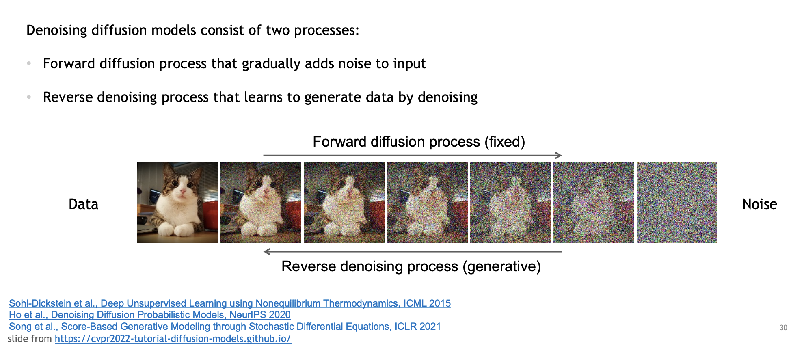
The top arrow is fixed arithmetic and involves no learning. The bottom arrow is the only thing trained. Generation means starting from noise, which is free to produce, and running the bottom arrow until an image appears.
The forward process
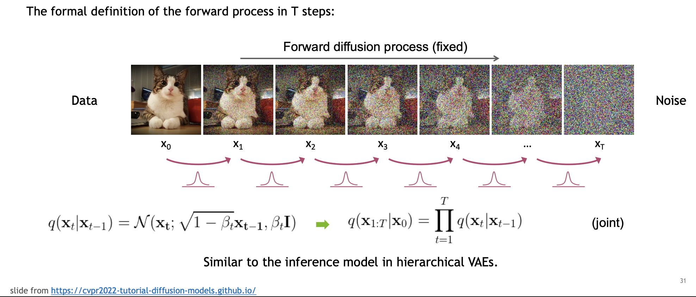
Each step adds a little Gaussian noise and shrinks what was there before.
Beta-t is the schedule, the amount of noise added at step t. The square root of one minus beta on the previous image is what keeps the variance from growing without bound. Nothing here is learned, and the same chain is used for every image in the dataset.
Jump to any step in one shot
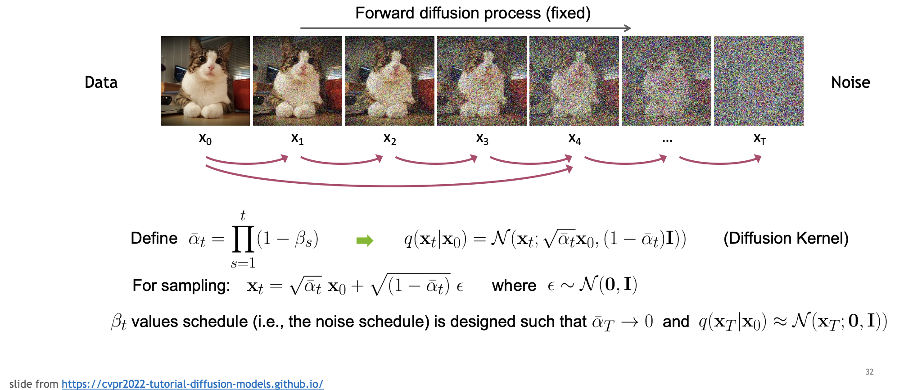
Composing all those Gaussians gives another Gaussian, so you never have to simulate the chain. Define alpha-bar as the running product, and x_t is a weighted mix of the original image and one draw of noise. This is the line that makes training possible: pick a random t, make the noise, ask the network to name it. No loop.
The noise schedule
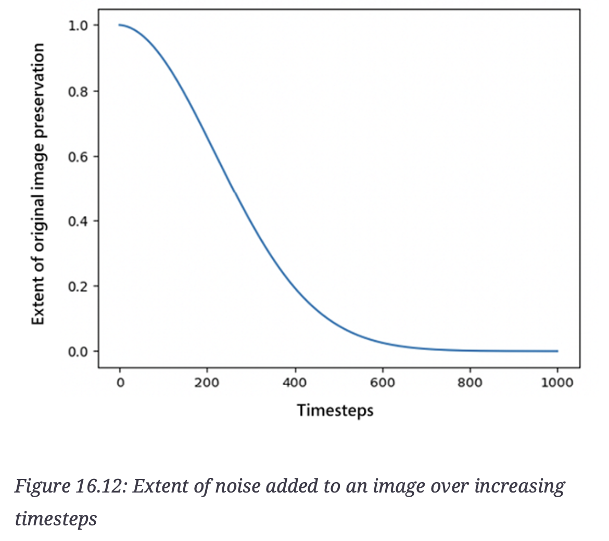
How much of the original survives, against timestep.
The schedule is a design choice, and it is one of the few places where diffusion papers differ in a way you can feel. A linear schedule destroys the image too early and wastes steps on pure noise; the cosine schedule holds on to structure for longer. The flat tail on the right is where nothing is left to learn from.
The forward process, measured
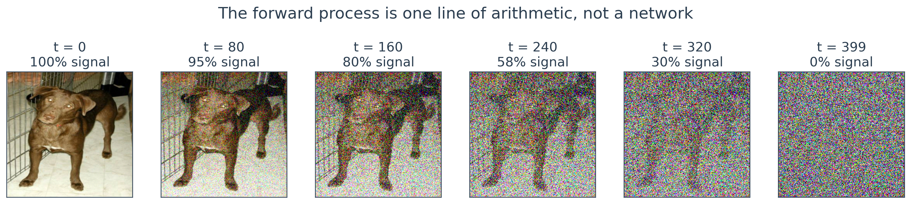
\(x_t = \sqrt{\bar\alpha_t}\, x_0 + \sqrt{1 - \bar\alpha_t}\, \epsilon\)
The same closed form, applied to a real photograph on this machine. The percentage above each frame is the square root of alpha-bar. Notice how much is already gone at the halfway point, and that the last frame is indistinguishable from the noise you would draw from scratch.
What the network learns
Given a noised image and the timestep, predict the noise that was added.
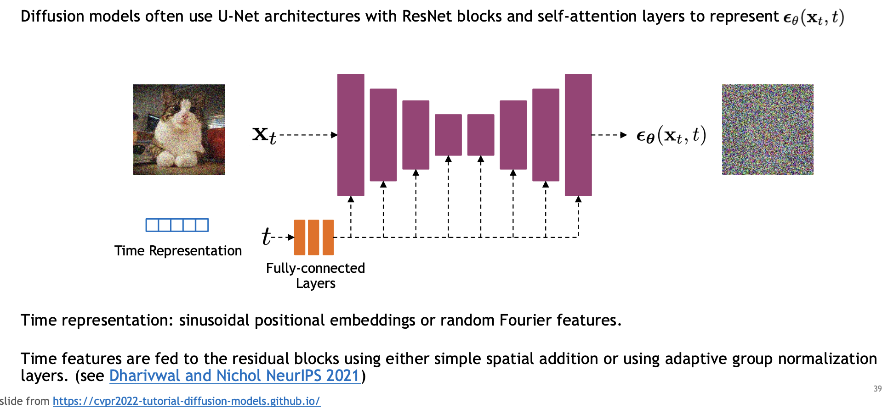
It is a supervised regression problem with a free label, because you made the noise yourself. Subtract the predicted noise and you have an estimate of the clean image. The architecture is a U-Net, the same encoder-decoder with skip connections used for segmentation in Week 7.
Where the conditioning enters
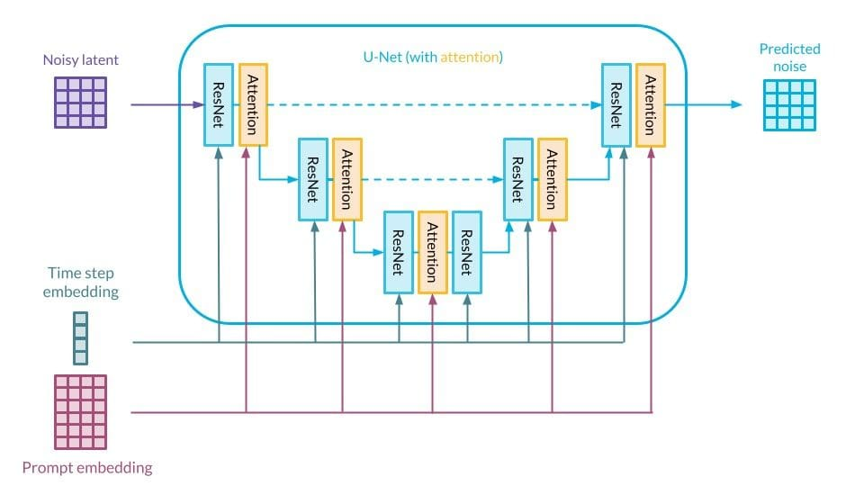
Both the timestep and the prompt are wired into every block.
Two colored rails run along the bottom and feed every level of the U-Net. One carries the timestep so the network knows how much noise to expect; the other carries the prompt. This is the picture to hold on to before we zoom into a single block on the next few slides.
Running it backwards
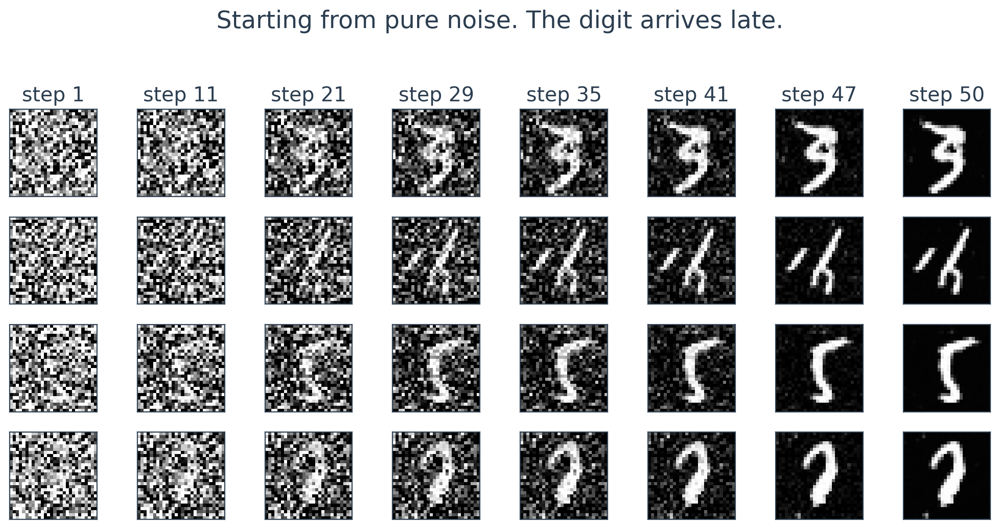
A small U-Net trained here on MNIST for 12 epochs, 2 minutes on one GPU.
Watch where the digit appears. For the first twenty steps there is nothing but noise, and the shape only commits around step 29. People expect the image to fade in evenly from the start, and it does not. The early steps are deciding the layout, and the late steps are sharpening it.
Inside one level of the denoiser
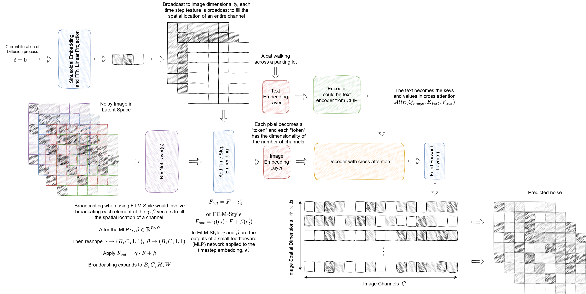
One level of the U-Net. Every level does this, and the whole U-Net runs again at every denoising step.
Be careful with the scope of this picture. It is not a denoising step and it is not the whole network. It is what happens inside a single level: features come in, the timestep is mixed in, attention reads the prompt, features go out. The U-Net has several levels on the way down and back up, each doing this, and that whole stack is one call to the denoiser. Fifty denoising steps means fifty of those calls. The next four slides are zooms into this one picture.
How it knows which step it is on
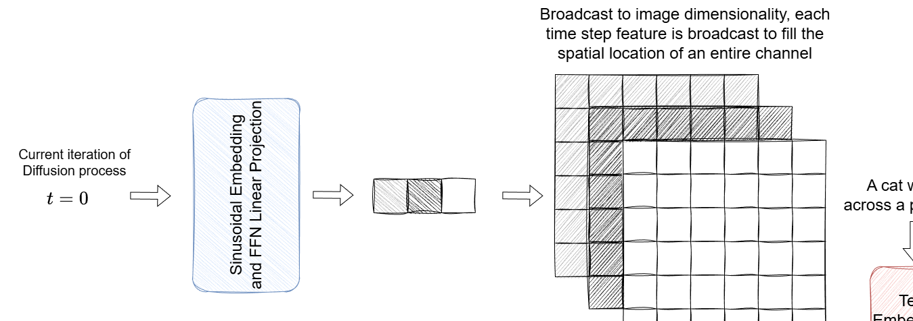
The timestep is a single integer, and the network needs it as a vector. The same sinusoidal embedding as transformer positions turns it into one, then a small MLP reshapes it. The broadcast on the right is the part people miss: one number per channel gets copied across every spatial location, so the whole channel is shifted together.
Two ways to use the timestep
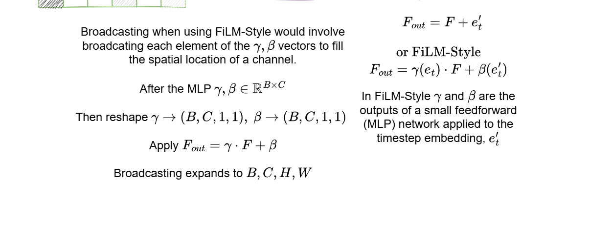
The simple version adds the embedding to the features. The FiLM version has a small MLP produce a scale and a shift per channel, and applies both. Scaling is strictly more expressive than shifting, because it lets the timestep turn a feature off entirely rather than just move it. Current models use FiLM-style conditioning almost everywhere.
Every pixel is a token
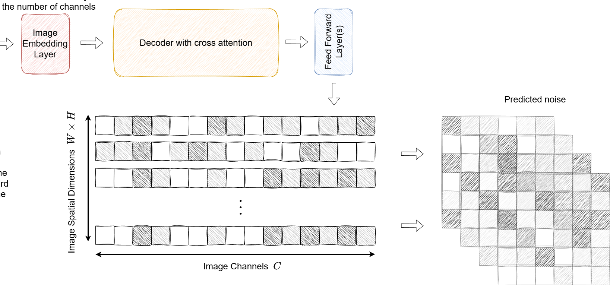
To run attention over an image you have to decide what a token is. Here each spatial location becomes one token, and its width is the number of channels. A 64 by 64 latent with 4 channels is therefore 4,096 tokens of width 4. This is the same flattening a vision transformer does, which is why the quadratic cost of attention is what limits the resolution the denoiser runs at.
How the prompt gets in
The text is encoded once, and every level cross-attends to it on every step.
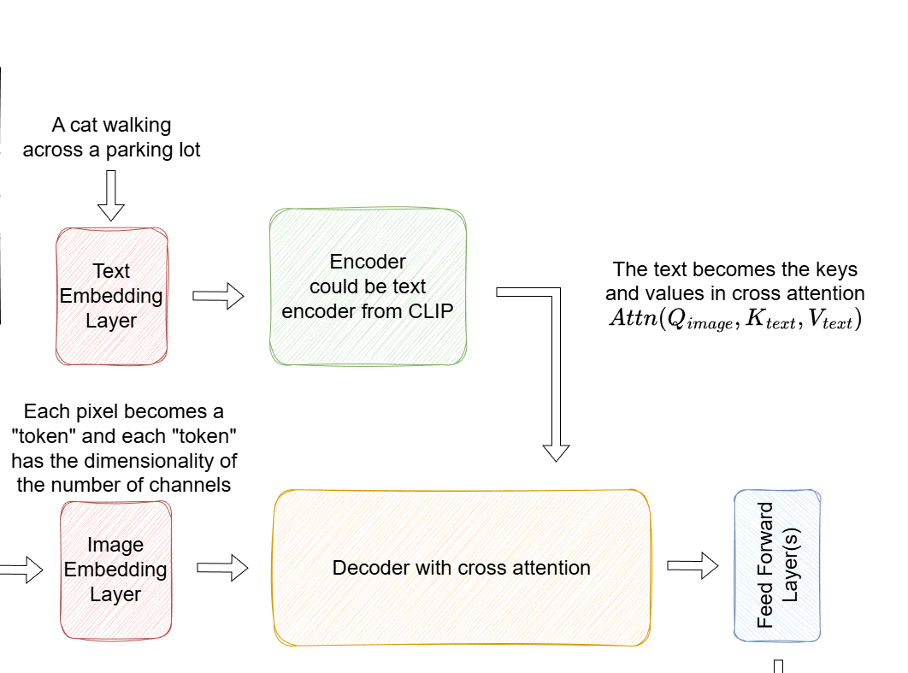
This is Week 9’s cross-attention, unchanged. The image is the query, the text is the keys and the values. Every pixel position gets to ask the prompt what it should be. Conditioning is not a separate mechanism bolted on; it is the same attention you already know, pointed at a different sequence. Note how often it runs: once per level, per step. The prompt is encoded once and read hundreds of times.
Why this is affordable
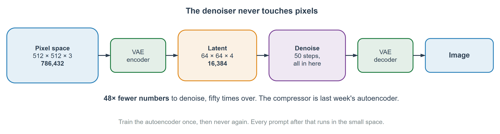
Running fifty denoising passes over 786,432 numbers is not something you would do on a laptop. Running them over 16,384 is routine. The encoder and decoder are trained once, separately, and then every prompt forever after runs in the small space. This is the difference between Stable Diffusion and the pixel-space models that came before it.
Stable Diffusion, as published
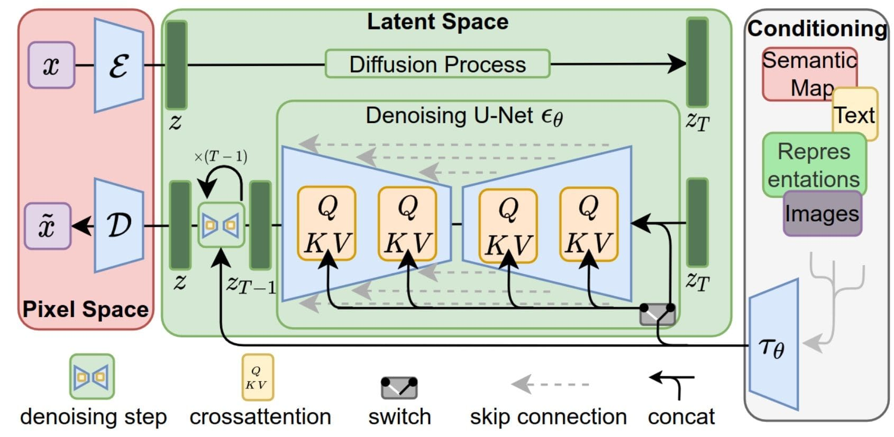
The same thing in the paper’s own notation. Pink is pixel space with the encoder and decoder, green is the latent space with the denoising U-Net, grey on the right is the conditioning, which does not have to be text. The QKV boxes are the cross-attention layers from two slides ago, and the times T minus one label on the small loop is the sampling loop.
The whole pipeline
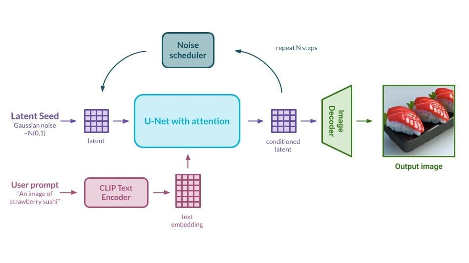
Prompt through a text encoder, random latent, the denoising loop with the text attended to at every step, then one pass through the decoder. Everything on this slide has now been covered except the text encoder, which is the last section.
Steps, measured
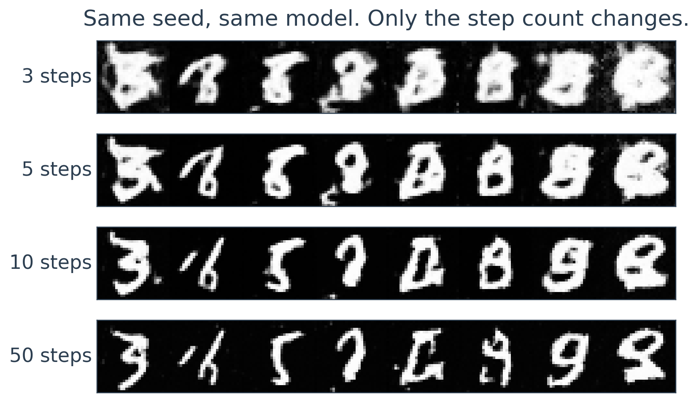
Same seed, same weights. Past about ten steps, more passes buy very little.
Three steps is unusable and ten is fine, which is not what the default of fifty suggests. The useful habit is to find the knee on your own model and your own prompts rather than trusting a default, because every doubling of steps doubles the bill and the latency.
Adapting an image model
You almost never train one of these. You adapt one.
LoRA : the same trick as Week 10, a style or a subject in a few megabytesimg2img : start from an image instead of noise, stop the clock earlyInpainting : freeze the pixels you like, denoise only the maskControlNet : condition on a pose, a depth map, or an edge map
These are all ways of constraining the same pretrained denoiser rather than retraining it. img2img is the one people underestimate: starting the loop part way means the output keeps the composition of the input, which is usually what a client is actually asking for.
What goes wrong
Hands, text, and counts. Local detail the denoiser was never pushed onPrompt adherence degrades as the prompt gets longerSeeds are not portable across library versions, schedulers, or hardwareTraining data provenance is a legal question, not a technical one
The last one is the one that will reach you at work. You will be asked whether the model can be used commercially, and the honest answer depends on the checkpoint and its training set rather than on anything you can measure. Record which checkpoint you used.
CLIP, the text encoder
CLIP trains an image encoder and a text encoder together so that a picture and its caption land at the same place.
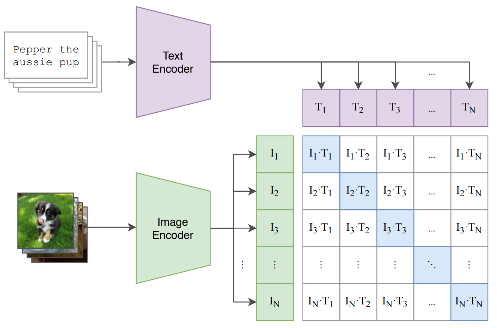
Train on image-caption pairs, and push the matching pair together while pushing every other pairing in the batch apart. That is the whole objective. The diagonal of that matrix is the correct pairs. Diffusion uses the text half of this to turn a prompt into something the denoiser can attend to, and next week is about everything else the pair of encoders is good for.
Wrap-up
A GAN learns its loss, which is why it is sharp and why it is unstable
Diffusion fixes the target instead: add noise you chose, predict it backThe forward process is arithmetic . Only the denoiser is trained
The timestep enters by scale and shift, the prompt by cross-attention
Every pixel is a token, which is why resolution is expensive
The loop runs in a latent space 48 times smaller than the pixels
Steps, guidance, seed, negative prompt. Log all four
Next week: everything else CLIP enables, how models combine two kinds of input, and a short introduction to graph neural networks.
Supplemental content
Optional. Prof. Hickman’s centralized lecture content , which is where most of today’s figures come from:
Also optional: Ho et al., Denoising Diffusion Probabilistic Models (2020); Rombach et al., Latent Diffusion (2022), which is the slide about the 48; Goodfellow et al., GANs (2014); Perez et al., FiLM (2017).
Lab 11 and Quiz 11
Lab 11 is diffusion by hand. You implement the forward process from the closed form, watch an image dissolve, then load a small trained denoiser and run it backwards, changing the step count and the seed. No training run. Due Wednesday, November 18.
Next week is Multimodal Deep Learning , plus a short introduction to graph neural networks. It is the last content meeting before presentations.